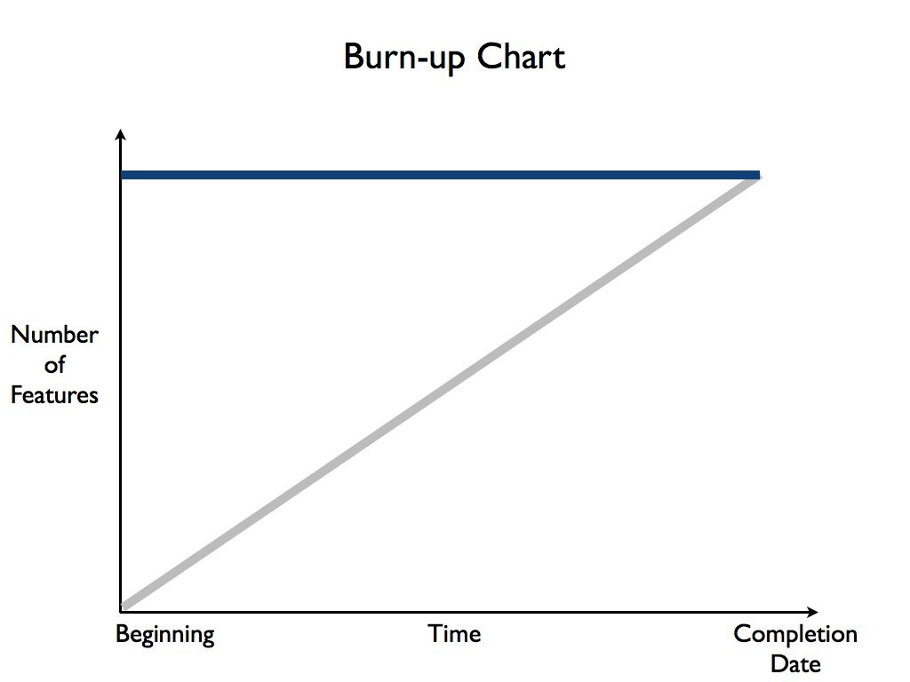
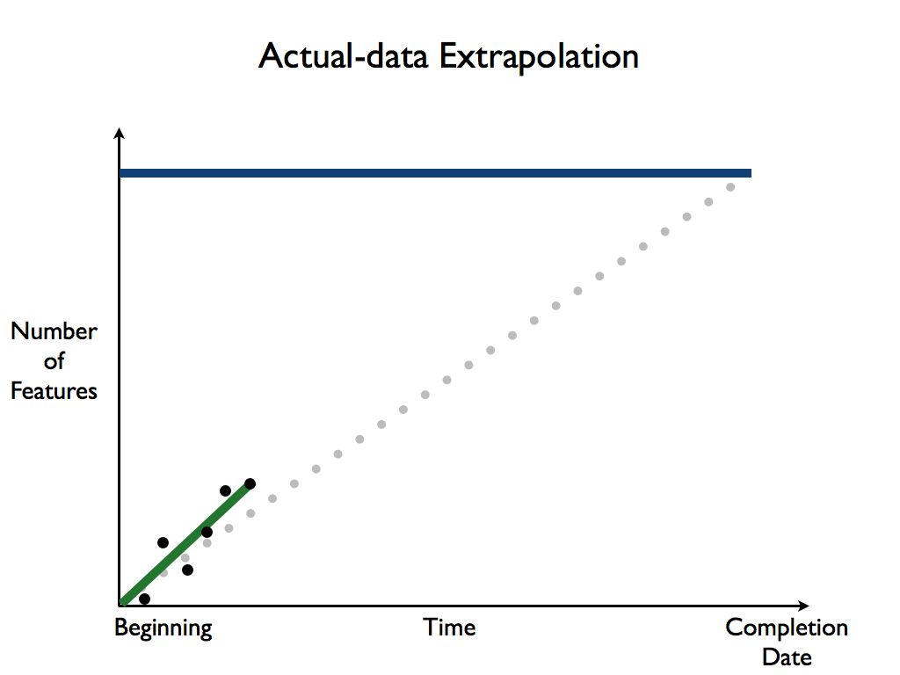
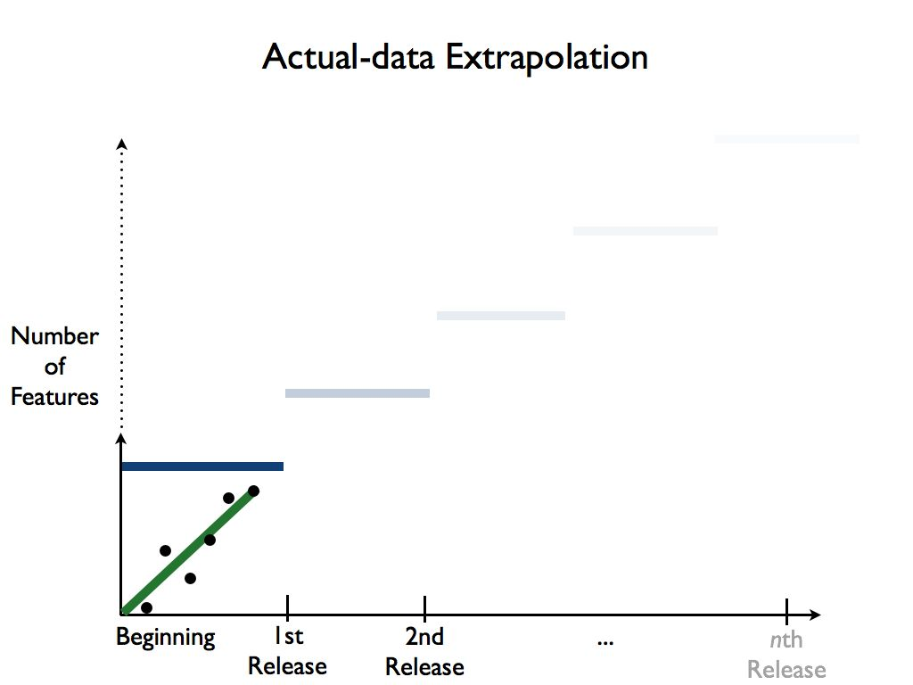
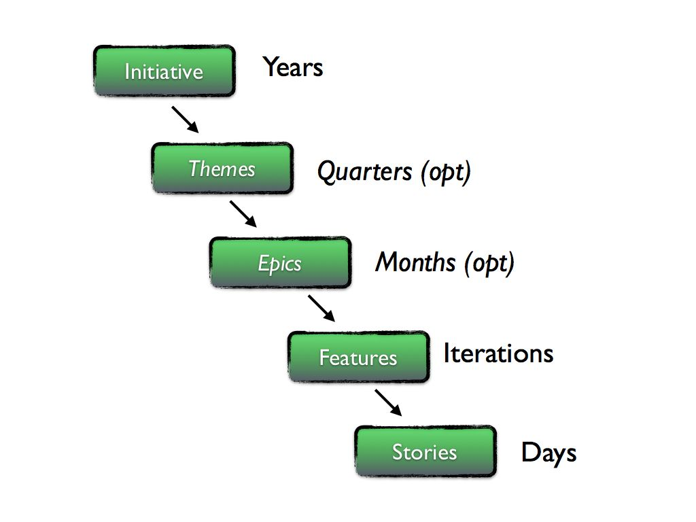
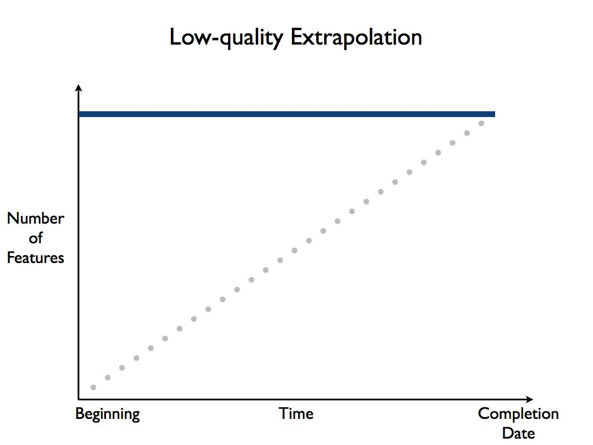
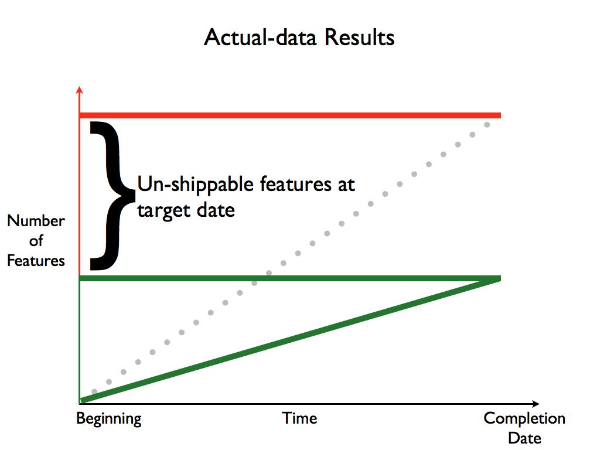
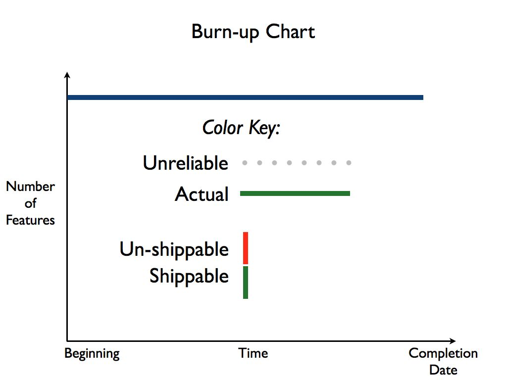

Toolshed Technologies
Andy Hunt. Author, Publisher,
Programmer, Musician.
About Estimates
—Andy Hunt
01/25/2016
Estimates are a standard and necessary part of the commercial world, but in software development they present a particularly thorny problem. Software development is mostly about learning. Developers learn requirements, learn how their technology stack applies to this problem domain, and learn how the evolving system reacts to planned and unplanned circumstances. How can you estimate how long it takes for a particular team to learn something? Clearly it depends on the team, and on how similar this project is to similar projects they’ve learned in the past.
So there’s one strike against us. The next issue may run even deeper though:
“Control is both an illusion and a delusion. Control is for beginners.”—Deb Mills-Scofield
In software development, we can’t “control” or predict the act of designing code very well at all, and it’s a beginner’s mistake to think so. People are the raw material of software development. We can’t yet readily control people’s imagination or creativity, or control their rates of learning, understanding, and communication. We might be able to improve these over time, but that’s different from gaining precise control in the short term, which we can’t do.
But perhaps we can do a better job at transparency, visibility, and tracking progress of these activities and their outputs.
Estimations for software are rarely correct, and very often abused—they can be easily be misrepresented as promises or guarantees, which they are not. Instead of arguing over estimation or the “no estimates” movement, let’s avoid the whole mess and work with projections instead.
In GROWS, Executives gain real-time transparency and accurate projections based on real data, from the actual teams involved, under actual conditions. Instead of insisting on some weak form of low-accuracy predictions that inevitably disappoint, we can all work with projections within defined confidence intervals, so that there are no surprises.
We’ll start by using burn-up charts (as opposed to the more common burn-down charts).
Use a Burn-Up Chart
A burn-up chart is a simple graph that plots the number of shippable features completed over time:

The Y axis, up the left-hand side, is the number of completed, shippable features the team has finished. The X axis, across the bottom side, is time going from the beginning of the project to the targeted completion date.
The ideal situation is that team will finish all the desired features by the completion date, as shown by the gray line in the figure above.
We recommend burn-up charts instead of the more common burn-down charts, because burn-up charts show you clearly what happens when more features are added (also known as “scope creep”), as shown in the following figure:

Not only will the team not make it by the initial target date, but it messes up the title caption on your slide—a clear indication that something is wrong. ;). The addition of extra features is literally “off the charts,” making this situation visible and transparent to everyone.
Once the project is underway, you simply plot the number of actual shippable features that were completed at the end of each time-boxed iteration, and plot a line between the dots to extrapolate a line up to the top:

But, and this is an important but, using a burn up chart does not mean that you have to wait and map out every task first, before you can start to work. The team can start and produce valuable features right away, even if there are only a few features defined yet:

And in fact, that’s a far better way to plan a project in GROWS: with continuous development of a little bit, all the time, with no monstrously and risky large “events” or episodes.
That’s the idea in a nutshell, now let’s dig a little deeper.
Time Frames
First, let’s clarify what we mean by things like “stories,” “features,” and so on. A story represents something a user can do, or benefit from, or that the system needs in order to operate. A given story is small enough to be completed within a single time-boxed development iteration and provides value to someone. Stories ideally take somewhere between 1/2 a day and 3 days to complete. A feature represents a collection of stories that can provide stand-alone value.
At the highest level, we start with long-range (on the order of years), concrete organizational goals. All work should ultimately be in service of a specific initiative. Initiatives may contain themes or epics, or both, in larger organizations. Smaller companies won’t need either.
Here are the terms we use for different time frames and their relationships:

The GROWS™ Method is centered on using actual results under actual conditions for process adoption, technical solutions, and planning and scheduling, which results in high-confidence projections for each project once enough data has been gathered.
That’s great once the project is underway, but presents a special problem for you at the start of the project. How we can you make any sort of estimate for the project before the project has started, when there is no data yet?
No Data Yet
If you have to estimate up front and do not have any data from this team to extrapolate from, you have a couple of choices:
- Use the rate for this same team from a previous project (might be reasonable accurate)
- Use the rate for a similar project with a different team (can be very unreliable)
- Use a generalized rule of thumb (well, it’s better than nothing)
The first two are straightforward: take some other project, figure out the number of features, the average stories per feature, and determine a basic team rate as features per iteration (just divide total number of features by their total number of iterations). You want the average stories per feature to be similar so that the results are roughly comparable. If they aren’t, adjust the number of features accordingly so that they match more closely.
If you have no data at all from any other reasonably similar team, you can start with a general rule of thumb of:
- Features have 16 stories
- Stories take 2.5 days
Anecdotal evidence and experience has shown that these guidelines aren’t terrible, but they aren’t correct either. Since this is low-quality, low-confidence data, we’ll always show that on our burn-up charts with a gray, dotted line as shown here:

Then, as you start to collect the actual number of shippable features with each iteration, begin to plot that on the burn-up chart, which we always show in “team green”:

Working with Actual Data
As you begin to extrapolate from the team’s actual data, you may find that the line is trending for more features completed per iteration than the estimate, or it’s trending exactly on the estimate, or it’s trending toward fewer features per iteration.
It’s very common and perfectly natural for that last case, where the team’s rate is showing fewer features completed than you wanted:

Those features which would have been in later iterations will not be completed by this given target date. Given the data we have, that is a simple fact. You have several choices:
- Make the team go faster / work harder
- Move the release date out
- Cut features from the release
Choice #1 is not possible in the short term. There are great ways to improve the team, and GROWS relies on many of these, but they take time to implement, and this team won’t be ready in time for this deadline. Set this choice aside for now.
Choice #2 might be a consideration, depending on your circumstances. It’s probably not the best choice in general, as it somewhat violates the spirit of timeboxing (see the Timebox Practice). Timeboxing ensures that you are always making progress by delivering regularly, to a steady rhythm. Which leads us to:
Choice #3 is often the best choice to make in order to keep things moving smoothly. With a steady rhythm and development pace, the “missing” features will still be delivered, they’ll just appear in a later release than originally hoped for.
Consider the current state of apps on your smart phone: many apps are updating (seemingly) constantly. As a user, you’re probably confident that the announced feature you’ve been waiting for will definitely show up, if not this time, then the next time. That spirit of continual, gradual delivery is a hallmark of modern software development (and a departure from the old-fashioned, naive “everything or nothing” approach).
Use Color Coding
To help convey the important parts of the burn up chart, GROWS uses a well-defined color code:

- Projections made without real data (e.g., based solely on initial estimates) are always shown using a dotted gray line.
- Actual team data is always shown using a solid green line.
- Number of Shippable features is always shown in green.
- Features that may fall outside the cone of completion are shown in red.
Never show actual team velocity in red. The team velocity is a constant—it cannot be changed in the short or medium timeframe.
You extrapolate the team’s velocity through to the end of the project and see how many features can reasonably be completed.
Features that are at risk of not being completed, or definitely can’t be completed given current projections, are shown in red.
It’s important to realize that you can’t make the existing team go faster or magically become more productive. Their rate is their rate, such as it is, in the short term (there are long-term fixes which we’ll address in other articles). The challenge then is to prioritize which features will be included by the target date, and which ones will not.
With an actively maintained burn-up chart in place, Executives can easily enjoy real-time transparency and accurate projections based on real data, from the actual teams involved, under actual conditions.
You won’t need to guess anymore; you’ll know.
Keep up to date with my low-volume newsletter and don't miss another article or fresh idea:


Latest News
-
New article: The Limits of Process
January 25, 2022 -
New article: Habits vs. Practices
January 5, 2022 -
New novel: Weatherly Hall
August 10, 2021 - List All News...
Recent Articles
-
The Limits of Process
January 25, 2022 -
Habits vs. Practices
January 5, 2022 -
Why Are There So Many Misconceptions Around Agile?
November 20, 2020 - List All Articles...
Upcoming and Recent Appearances
- Private Keynote, Fortune 500 company. Sep 30, 2020
- TDev Conference Keynote. Oct 3, 2020
- Private Keynote, Large Venture Capital firm. Oct 20, 2020
- DevOps Summit Keynote. Nov 7, 2020
- AgileMovement.it Keynote Nov 14, 2020
- Empowering Agile Fireside Chat, Feb 25, 2021
Email schedule@toolshed.com to book Andy for your next keynote or session.